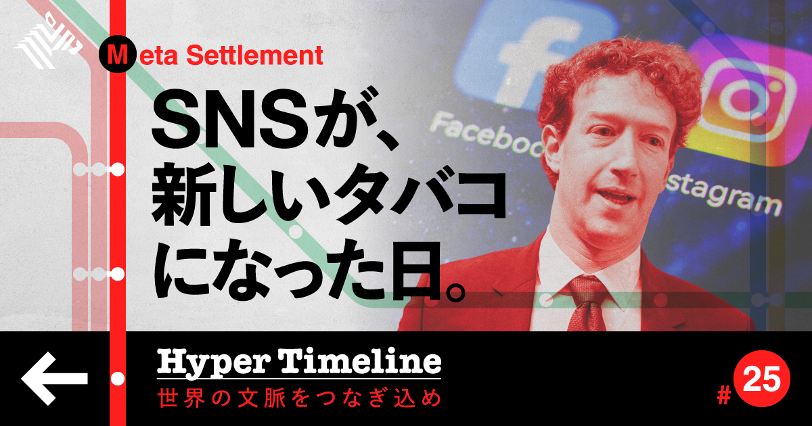
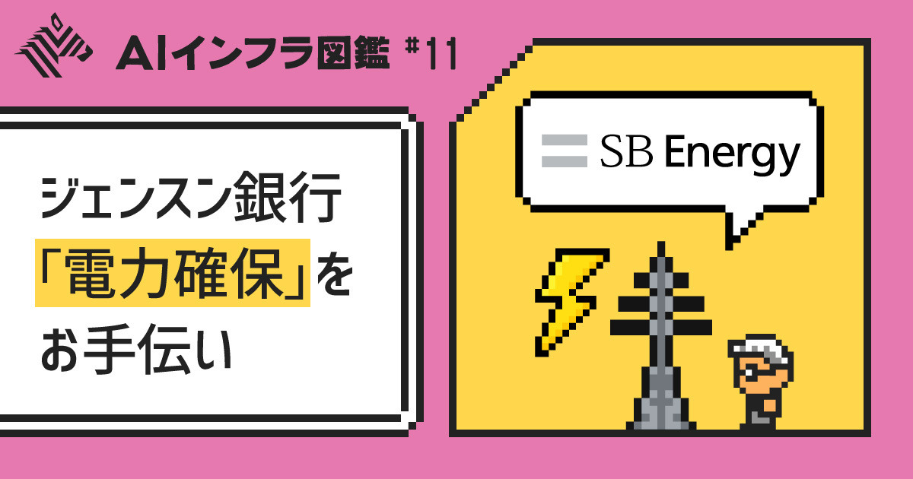
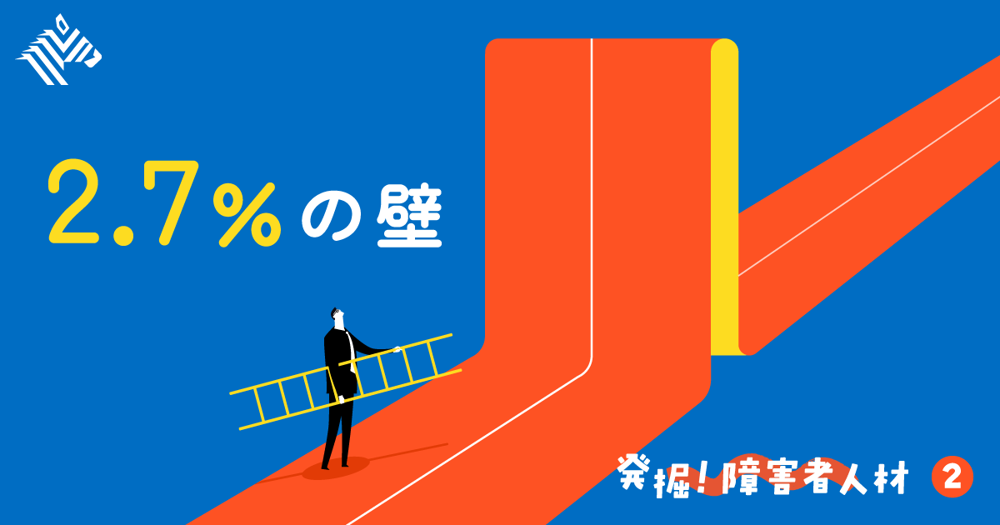
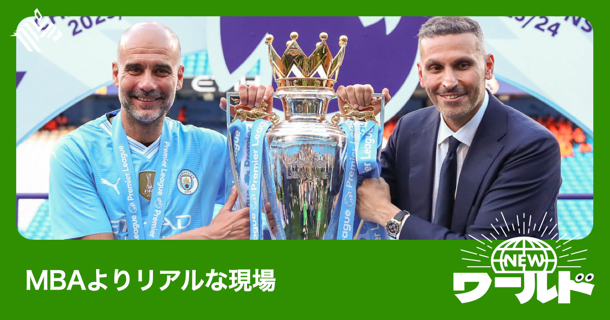
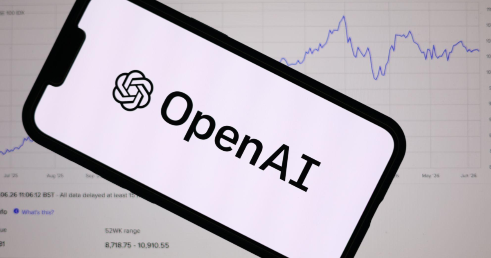

01
【巨額和解】まもなく「インスタ時代」が終わる
発行日時：2026年9月4日 05:30 JST ・ NewsPicks編集部

あなたに関係ありそうな理由
AIを含むデジタル製品で、機能の便利さだけでなく、利用者への影響をどのように設計・説明・検証するかを考える材料になるためです。
概要
この記事は、米カリフォルニア州を含む29州が、未成年に中毒性の高いプラットフォームを提供したとしてメタを訴えた件で、同社が約180億ドル、約2兆9000億円の和解に合意したと伝える。焦点は金額だけではない。訴訟では、インスタグラムやフェイスブックの投稿内容の責任を負わないという従来の防御ではなく、アプリの機能設計そのものに依存性・有害性があるという構図が問われた。記事は、社内チャットや資料から、利用者を引き留める仕組みのリスクを認識していた疑いが浮かんだこと、2015年時点で13歳未満の利用者が400万人超いると社内で把握していたことに触れる。メタは自社責任を認めていないが、和解で18歳未満の1日利用を2時間に制限し、午後10時から午前7時の通知停止、ビューティーフィルターや「いいね」数表示の廃止を約束した。一方、広告収益の核である無限スクロールは残る。だからこれは全面的な解決ではなく、製品設計が規制・訴訟の対象となる入口だと読める。記事は、メタがこれまでSection230を盾に、利用者の投稿への責任はプラットフォームが負わないと主張してきた経緯もたどる。今回は別の訴訟で技術そのものの有害性を認める司法判断が出たことで、その逃げ道が狭まったという。和解後に株価が上がったのは、巨額でも不確実性が減ることを市場が評価したという見方も紹介する。メタはユーチューブやTikTokも同じ制限を受け入れるべきだと主張し、米主要紙に意見広告を出した。自社だけが不利にならない競争条件を整える意図も読み取れる。表示コメントでも、利用制限の実効性だけでなく、画面時間が別の行動へ置き換わる可能性、米国では訴訟、EUではDSAという制度差を踏まえて日本でどう扱うかが論点になった。記事後半は、AIコンパニオンや学習での認知的な肩代わりも次の焦点に挙げる。企業側には、成長を示す指標と安全性の指標を同じ経営判断に載せる視点も必要になる。どの機能が誰にどんな依存や不利益を生み得るのか、年齢に応じた設計・説明・検証をできるかが、AIを含むプロダクトの信頼を左右する。
これは法務部だけで完結しない経営課題でもある。
仕事や会話で使える一言
「機能の成長指標だけでなく、誰にどんな不利益が生まれ得るかを製品設計に戻して考えたいです。」
NewsPicks原文を読む
02
【分析】あの会社の上場は、エヌビディアの「近未来」を映す
発行日時：2026年9月4日 05:30 JST ・ NewsPicks編集部

あなたに関係ありそうな理由
AI投資を半導体の性能競争だけでなく、電力・建屋・資金保証を含む実行可能性の問題として見直せるためです。
概要
この記事は、エヌビディアがAI企業への出資にとどまらず、データセンター向けの土地・電力・建屋を確保する上流事業へ資金を入れ始めた背景を、SBエナジーの米国上場目論見書から読み解く。エヌビディアはオハイオ州パイク郡の巨大データセンターを開発するSBエナジーに、当初の15億ドルにIPO時の15億ドルを加え、計30億ドル、約4800億円を出資する。そこではGPU、CPU、ネットワーク機器を独占的に供給する計画だ。狙いは製品を売る先の確保だけではない。米国では2027年以降、AIサーバー向け半導体より電力容量が不足するとの予測があり、計算資源を置く前提の電力が制約になりつつある。計画の総電力負荷は10GWで、確保済みは0.8GWにとどまる。ガスタービンは最長7年待ち、政府資金の条件は未確定、送電線拡張には州・連邦の承認が要り、運用事業者から60億ドル超の保証を求められる可能性もある。OpenAIは同施設を20年借りる契約を結び、エヌビディアは半導体の残存価値保証を用意する。支払不能時にリースを引き継ぎ・再貸与できるようにし、事業者の資金調達を支える仕組みだ。発電所を建てて給電する構想なので、サーバー購入より先にインフラ設計と地域の合意が成否を決める。記事はこの制約をAI特有の問題ではなく、電力事業が元から抱える時間の問題としても捉える。記事は8月だけで、SBエナジー、Cloverleaf、Lanciumの3社へ出資したことも挙げる。これまでモデル開発企業に資金を提供し、間接的にGPU購入を支えた形から、LPS事業者に向かうことで、将来の顧客と製品搭載を同時に確保する構図へ移った。一方、グーグル、アマゾン、OpenAIなどは自社チップを進め、エヌビディアへの依存を減らそうとしている。だから同社は、半導体の販売先より上流のLPSを押さえ、フルスタック採用を促す構えだと記事は見る。表示コメントでは、巨額の出資や保証でもタービン納期や許認可を縮めるわけではなく、工期の遅れで事業が尽きない体力を買う行為だという見方が出た。AI投資の進捗を読む時は、発表された調達額だけでなく、電源、設備、人員、承認という現場の順番まで確認したい。
仕事や会話で使える一言
「資金があっても工程は縮まらない。AI投資は、電力・設備・許認可までつながって初めて動きます。」
NewsPicks原文を読む
03
【難題】コンサルも頭を悩ます、障害者雇用は「経営課題」だ
発行日時：2026年9月4日 05:30 JST ・ NewsPicks編集部

あなたに関係ありそうな理由
雇用を人数合わせではなく、仕事の分解、支援、評価を備えた組織設計として考える材料になるためです。
概要
この記事は、障害者雇用を法定雇用率の達成だけで終わらせず、事業に貢献する人材として迎えるには何が必要かを、支援会社と事業会社への取材から追う。民間企業で働く障害者は70万人を超えたが、2025年時点で法定雇用率2.5％を達成した企業は46％にとどまった。2026年7月には基準が2.7％へ上がり、採用と定着を同時に考える難しさが増している。都市圏では就労準備の整った人材を企業が取り合い、就職後1年以内の離職も約4割に上る。パーソルダイバースは、これを福祉や慈善ではなく、事業継続のための労働力確保と位置付け、経営層の関与から始めるという。重要なのは「障害のある人に何ができるか」から考えるのでなく、まず会社に必要な仕事を洗い出し、個別に必要な配慮を組み込む「仕事起点」への転換だ。精神障害の特性は診断名だけでは判断できず、適性や支援は一人ずつ異なる。エス・エム・エスは17の領域別チームで業務を5〜15分のタスクに分解し、画像・動画の手順書を整えた。約400種類の業務を担い、入社3年後の定着率85％、外注費の年間約6000万円削減につながったという。障害者自立支援サービス全体は2023年度に約1.6兆円規模で、前年度比10％超の成長が続く。取材に応じた当事者は、健康診断資料の郵送を担い、5〜6人のチームを率いながら別部門の仕事も兼任する。信頼されて役割を広げられることが、本人にとっても重要だと語る。農園やサテライトで働く場所を外部提供する雇用支援は違法ではなく、選択肢になる場合もある。ただし、社内の仕事と切り離せば、受け入れ文化やノウハウが残りにくく、追加費用も生じる。厚労省は事業開始の届け出や利用状況報告を求める規制案を示した。表示コメントでは、合理的配慮を一部の人だけの特別扱いにせず、多様な人を前提に仕事を設計し直す経営思想として捉えるべきだという論点が出た。当事者が求めるのも、簡単な作業だけを任されることではなく、戦力として信頼されることだ。採用後も、上司や周囲が相談しやすい状態をつくることが定着の条件になる。雇用率を通過点にし、手順、道具、フィードバックを仕事に組み込めるかが組織の実力になる。
仕事や会話で使える一言
「人に仕事を合わせる前に、仕事を見える形に分け、必要な配慮を設計できるかが問われます。」
NewsPicks原文を読む
04
【新視点】「経営」はスポーツドキュメンタリーに学べ
発行日時：2026年9月4日 05:30 JST ・ The Economist（NewsPicks掲載）

あなたに関係ありそうな理由
抽象的な経営用語より、目標、圧力、人の感情が同時に動く現場から組織運営を考えられるためです。
概要
この記事は、AIが生成した教授による講座に699ドルを払うなら、スポーツドキュメンタリーの方が経営の生きた教材になるのではないか、という皮肉から始まるThe Economistの論考だ。配信各社はF1、シカゴ・ブルズ、サッカー代表などを追う作品を増やしてきたが、記事は成功談をそのまま経営論に移すことを勧めてはいない。むしろ、監督と選手、地元のファン、世界の資本、毎週の勝敗がぶつかる現場を通して、抽象化しにくい判断を見られる点に価値を置く。パンデミック期にF1の『Formula 1: 栄光のグランプリ』や『マイケル・ジョーダン: ラストダンス』が広く見られた後、配信各社が監督の哲学を扱う作品を大量に出すようになったという。中心例は、マンチェスター・シティを率いたジョゼップ・グアルディオラ監督の最終シーズンを描くAmazonの『ビューティフル・オブセッション』だ。クラブの年間売上高は約10億ドル、約1600億円で、監督は地元の熱心なファンとオーナーであるアブダビ政府系ファンドの双方に責任を負う。ロッカールームのような舞台裏は、上場企業の取締役会と違って映像で見えるため、意思決定の温度や対立も観察できる。記事が面白がるのは、彼の手法が単一の経営理論に収まらないことだ。選手を抱擁する一方、敗戦後には激しい言葉で叱責し、43項目の指標による選考モデルも使う。データと人間的な感情、厳しい規律と偶発的な試合展開が混ざる。もちろん、自動車部品会社の中間管理職が同じ口調をまねれば職場は壊れる。それでも、AI研究所やヘッジファンドのように少数の突出した人材の力を引き出す組織では、極度の圧力や才能の扱い方を観察する意味があるという。記事は、スポーツの生中継やチームへの帰属意識はAIが容易に複製できない価値であり、投資家がチームを買い集める背景にもなると述べる。表示コメントでは、教材が答えを教えるのではなく、自分で考えるきっかけをつくるという受け止めや、舞台裏が見えること自体の価値が挙がった。会議に理論を持ち込む前に、目的、役割、評価、失敗時の修正が実際にどう回っているかを見る。その観察力こそ、他分野から学ぶ時の出発点になる。
仕事や会話で使える一言
「他社の成功法則を借りるより、目標・役割・修正が現場でどう回っているかを観察したいです。」
NewsPicks原文を読む
05
【世界のニュース７選】オープンAI新モデル発表 初期は「制限」
発行日時：2026年9月4日 17:00 JST ・ The Economist（NewsPicks掲載）

あなたに関係ありそうな理由
AI、企業再編、地政学、気候、地図表現まで、別々の論点を短時間で把握し、気になる領域を深掘りする起点になるためです。
概要
この記事は、The Economistの『The world in brief』として、9月4日に起きた国際ニュースを七つの短い報で伝える。第一はオープンAIの新モデル「GPT-6 Astra」だ。同社はAGI時代の到来を告げるモデルと位置付け、共同創業者グレッグ・ブロックマン氏は、人がコンピュータで行える作業を扱えると説明した。一方で、未知のサイバー攻撃を引き起こす能力も分析したとして安全対策を追加し、初期提供を承認済みの一部テスターに制限する。第二はエヌビディアによるハギングフェイスの130億ドル買収である。オープンソースAIモデルの流通基盤を持つ同社を取り込むことで、AI業界で重要な流通チャネルの主導権を握る構図を示す。記事の「今日の数字」は9で、エヌビディアが時価総額を2倍の2兆ドルに増やすまでに要した月数を指す。現在の企業価値は5兆4000億ドルとされ、半導体企業の影響力の大きさを補足する。第三はイランが、イスラエル軍によるレバノン南部への本格侵攻があれば大規模攻撃を始めると米国へ警告したという緊張だ。続いて、アルゼンチンのミレイ大統領がフォークランド諸島周辺の油田開発を主権上の危機と位置付け、領有権問題が資源開発と結び付くことを伝える。企業では、フォルクスワーゲンが中国勢との競争や高い人件費を背景に、従業員の約8％に当たる最大5万人の追加削減を決めた。気候面では、スリランカで降水量が平年を85％超下回る地域があり、エルニーニョによる干ばつの深刻化が懸念される。最後は国連が、アフリカを相対的に小さく見せるメルカトル図法に代え、面積をより正確に表すイコール・アース図法の採用を求める決議案を採決する見通しだ。地図の選び方は、国や地域の相対的な大きさを日常的にどう認識するかにも影響する。表示コメントでも、地図の形は単なる技術ではなく、何を大きく、何を小さく認識するかに影響するという受け止めがあった。記事は個別ニュースを一つの結論へ結ばない。だからこそ、AIの安全管理、半導体企業の支配力、地政学、雇用、気候という別々の論点を混同せず、それぞれで次に確認すべき事実を持つための速報として読むのがよい。
仕事や会話で使える一言
「短い国際ニュースほど、論点を一つにまとめず、次に確かめる事実を分けて持ち帰りたいです。」
NewsPicks原文を読む